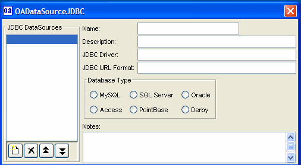

|
JDBC is the Java database interface to work with all of the major databases.
This information is used to connect to the database, and defines the type
of database.
From the OABuilder menu, select "View" and then select "DataSource Settings ...".

|